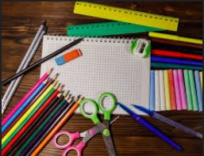

Supplies for School
Supply your local school with necessary school supplies for
Education is a human right and a crucial resource. Literacy improves health, income, and
livelihood, but in 2012 the Global Partnership for Education estimated that 61 million
children across the globe do not attend schools. These children find themselves disadvantaged.
Without access to learning, they become trapped in the generational cycle of poverty suffered by
their families and those before them. The same report noted that even when children in lesser developed
countries go to school, the quality of their learning leaves them many grades behind the students of
wealthier nations.

Basic needs like pencils, pens, paper, and textbooks help students engage in lessons, as they
gain knowledge they can bring back to their community to improve overall welfare. Projects in
school can translate into better lives for families in extreme poverty. A student can learn to
research hygiene from a textbook, and share this information, reducing disease and increasing
life expectancy. A child can learn to use a pencil and paper to manage finances and plan for new
sources of income. Education and its resources encourage a lifetime of problem-solving for young learners.